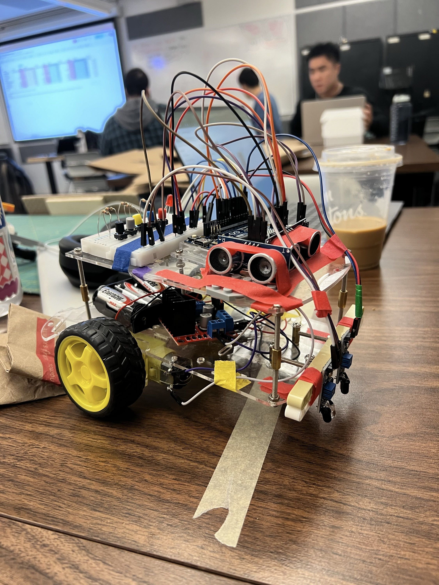
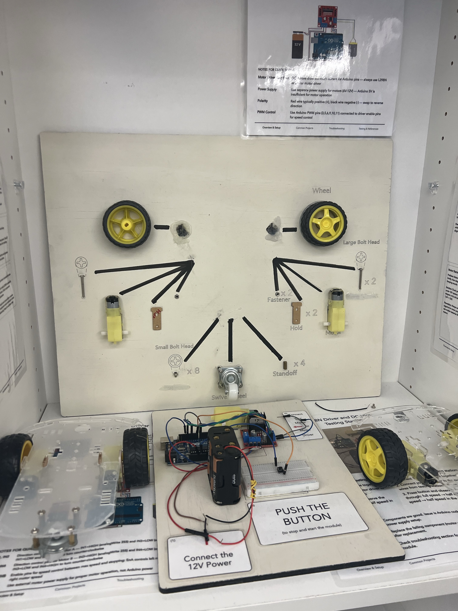
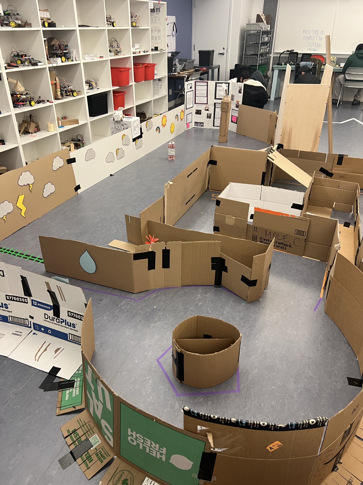

January–March 2026 · Lab group project
Maze-Solving Robot
Line Following and Right-Wall Following

Overview
A two-wheeled robot that completed a cardboard maze in two stages: following a white line on a dark floor, then following the maze walls with ultrasonic sensors.
Parts list
- Arduino Uno
- Main controller for line following and wall following.
- HC-SR04 ultrasonic sensor × 2
- One faces the right wall and one faces forward, for wall following.
- IR reflectance sensor × 2
- Detect the white line on the dark floor for line following.
- Motor encoder
- Wheel encoders (20 ticks per revolution) that report distance travelled.
- Motor driver (H-bridge)
- PWM speed control and direction control for the two motors.
- AA battery pack
- Power supply for the motors and the board.

Modeling
Chassis: two-layer acrylic 2WD kit. Battery pack and motor driver on the lower layer, Arduino and breadboard on the upper layer.
Sensor mounts: line sensors on a LEGO bar at the front, ultrasonic sensors fixed with LEGO plates and tape so positions could be adjusted quickly during testing.
Maze: cardboard walls with corners, recesses and a circular obstacle, plus colored floor tape marking the route.

Hardware platform
Arduino Uno drives two DC motors through an H-bridge, with PWM speed control and direction pins. Differential drive: turning is done by changing the speed of the left and right wheels.
The two motors respond slightly differently, so the sweep speeds are tuned separately
Stage 1: Line following
Two digital IR reflectance sensors, each with an onboard trimmer that sets the threshold separating the white line from the dark floor.
Basic control: both sensors on the line, drive straight. Only one on the line, drive one wheel and stop the other to steer back.
Junctions and corners (lost-line scan): when the line leaves both sensors, the robot stops and sweeps left (about 90°), then right (about 180° total), and stops as soon as either sensor sees the line again. The sweep order is fixed, so at a junction the robot prefers the left branch. The turn ends when the sensors confirm the line, not after a fixed angle.
Left and right sweep speeds are tuned separately (180 and 200) to compensate for the motor difference.
Design iteration
V1: two sensors, remembers the last side where it saw the line and turns that way when lost. It can keep turning the wrong way.
V2: added a center sensor so going straight does not depend on two sensors agreeing.
V3 (final): two sensors with active left-right scanning to recover the line.
Stage 2: Wall following (right-hand rule)
One ultrasonic sensor (HC-SR04) faces the right wall and one faces forward. Each reading is the median of three samples, so a single bad echo cannot trigger a turn.
Follow: proportional control holds about 17 cm from the right wall (error = measured distance − 17 cm, one wheel speeds up and the other slows, Kp = 4, speeds clamped to 80–200, 1 cm dead band).
Right turn: when the right wall disappears (no echo or more than 45 cm), drive forward about 2 cm so the body clears the corner, then pivot right 90° (450 ms). This has the highest priority, which implements the right-hand rule.
Left turn: when a wall is ahead (20 cm or less), stop and pivot left 90°.
The maze has no branches, so the rule only has to handle corners. Gentle curves are followed by proportional control alone, and sharp corners use pivots, where one wheel drives and the other stops.
The robot stops at the maze exit when the front sensor sees open space beyond the maze.
Design iteration
V1: side sensor only, three-level steering (too close, in band, too far). It zigzags and cannot handle corners.
V2: proportional control, with turns that end when sensors see the new wall and a history buffer to reject bad readings. Turn angle depended on sensor timing.
V3: calibrated timed 90° pivots, giving repeatable turns, but a single bad reading could cause a false turn.
V4 (final): added median filtering and retuned the setpoint, wall threshold and turn timing for the maze.
Problems and solutions
Deciding when to turn: a side reading of 0 or above 45 cm means the wall is gone.
Turn angle: calibrated by time and tuned on the robot.
Gentle curve versus sharp corner: proportional control versus pivot turns.
Left versus right logic: right turns take priority over left turns.
Junctions in the line section: fixed left-priority scan.
Limitations
Timed turns depend on battery level and floor friction, so the turn angle drifts as the batteries drain.
The filter takes three readings per sensor with blocking delays, so the robot reacts more slowly and cannot read sensors while turning.
The robot was connected to a computer by a cable during runs.